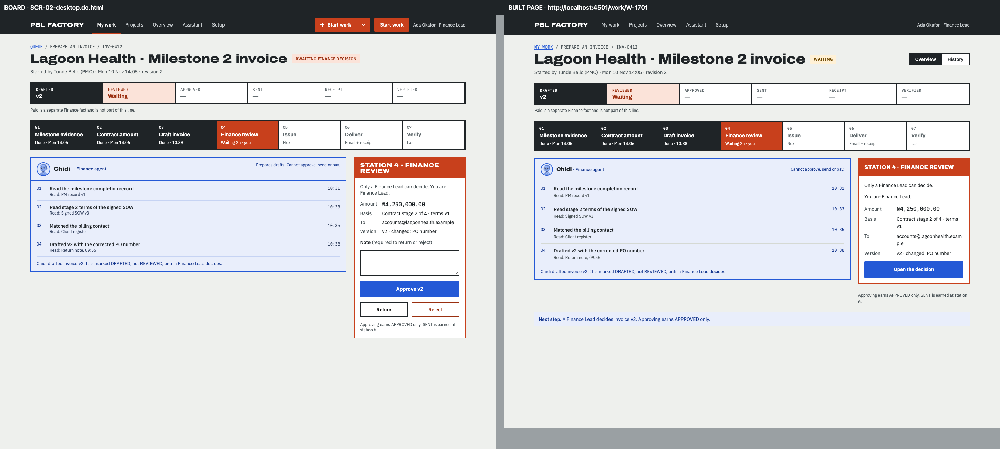
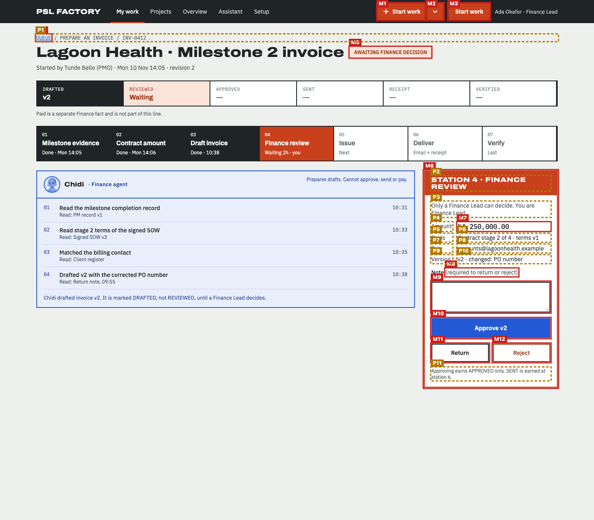
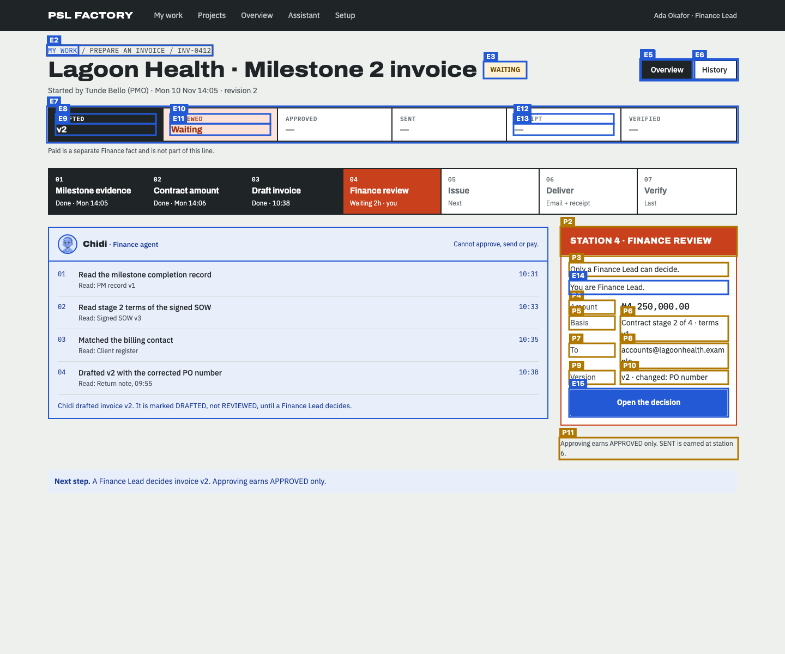
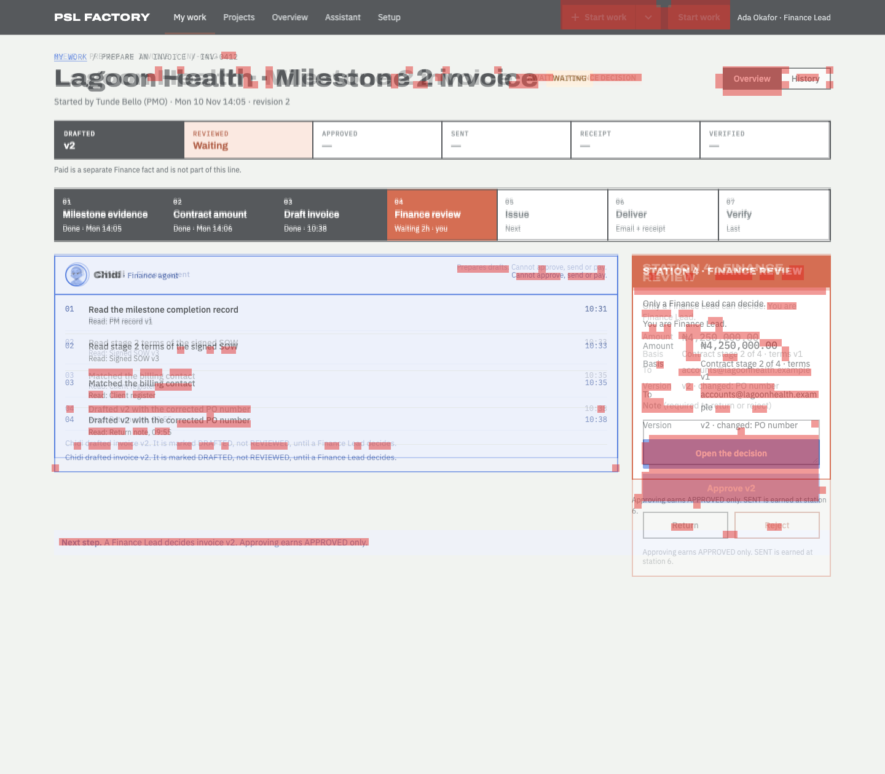

Does the built page follow the design?
Board SCR-02-desktop.dc.html compared with http://localhost:4501/work/W-1701 at 1440px wide · 2026-11-14T08:56:57.264Z
- Every board item is on the page or approved as an exception (100%).
- Visual match 85.8 is below 90.
- 11 item(s) are in a different place; review them (not part of the pass rule unless --strict-position).
29 of 41 things drawn on the board were found on the page: headings, buttons, links, search and filter controls, table columns, labels and the repeated rows (counted once, not per row).
How closely the shapes line up: blocks, bars, tables and text areas, compared in 12px squares over the top 1260px. Different words in the same place still count as a match, so sample data does not lower the score.
Missing from the built page 12
Drawn on the board but not found on the page. Each one must be built, or approved as an exception.
| # | What | Text on the board | Where on the board | Exception |
|---|---|---|---|---|
| M1 | Link | Start work | right, 8px down | approved Top-bar Start work belongs to F-05 (src/shell); not merged on the base. As D-17. · builder proposal, pending design engineer |
| M2 | Link | More ways to start | right, 8px down | approved Split part of the F-05 Start work button in the top bar. · builder proposal, pending design engineer |
| M3 | Link | Start work | right, 8px down | approved Top-bar Start work belongs to F-05 (src/shell); not merged on the base. As D-17. · builder proposal, pending design engineer |
| M4 | Link | QUEUE | left, 84px down | approved Boards name the crumb QUEUE, MY WORK or draw a REF · CLIENT eyebrow; the page keeps F-03's "My work / line / ref" crumb on every state (D-17). · builder proposal, pending design engineer |
| M5 | Text | AWAITING FINANCE DECISION | right, 114px down | approved Board-only state wording; the tag shows STATE_TAGS.waiting ("Waiting", CMP-05), as D-17. · builder proposal, pending design engineer |
| M6 | Side panel | Your decision | right, 413px down | approved The decision panel is F-03's TaskPanels section, named "Current human task" (binding F-09 seam: TaskPanels({ id, tasks }) unchanged). · builder proposal, pending design engineer |
| M7 | Text | ₦4,250,000.00 | right, 539px down | approved Shown in the Amount row by F-04's DecisionRows/AmountValue (read-only here); the check cannot read a lone span inside a <dd>, so it reports the amount as missing although it is on the page. · builder proposal, pending design engineer |
| M8 | Text | (required to return or reject) | right, 651px down | approved Part of the F-04 Note field label. · builder proposal, pending design engineer |
| M9 | Text field | Note (required to return or reject) | right, 683px down | approved The decision is taken on SCR-03 (F-04) with its version and stale checks; the page links there with "Open the decision" (F-03 AC 7). · builder proposal, pending design engineer |
| M10 | Button | Approve v2 | right, 771px down | approved Deciding is F-04's (SCR-03); no decision is taken on this page. · builder proposal, pending design engineer |
| M11 | Button | Return | right, 833px down | approved F-04 (SCR-03). · builder proposal, pending design engineer |
| M12 | Button | Reject | right, 833px down | approved F-04 (SCR-03). · builder proposal, pending design engineer |
In a different place 11
Found on both, but in a different order, side of the page, or area (for example inside the table frame instead of above it).
| # | What | How it moved |
|---|---|---|
| P1 | Text QUEUE / PREPARE AN INVOICE / INV-0412 |
|
| P2 | Heading STATION 4 · FINANCE REVIEW |
|
| P3 | Text Only a Finance Lead can decide. You are Finance Lead. |
|
| P4 | Text Amount |
|
| P5 | Text Basis |
|
| P6 | Text Contract stage 2 of 4 · terms v1 |
|
| P7 | Text To |
|
| P8 | Text accounts@lagoonhealth.example |
|
| P9 | Text Version |
|
| P10 | Text v2 · changed: PO number |
|
| P11 | Text Approving earns APPROVED only. SENT is earned at station 6. |
|
Looks different 5
Found on both, but styled differently: table rows and cells, fonts, colours, underlines, outlines, corners. Not part of the score; check each one against the board.
| What | Difference |
|---|---|
| Repeated blocks with 2 text field(s) each |
|
| Link "My work" |
|
| Heading "Lagoon Health · Milestone 2 invoice" |
|
| Heading "STATION 4 · FINANCE REVIEW" |
|
| Text "Only a Finance Lead can decide. You are Finance Lead." |
|
On the page but not on the board 15
Built but not drawn. Some are expected (data, status lines); the rest need the design engineer to approve or remove them.
| # | What | Text on the page | Where on the page |
|---|---|---|---|
| E1 | Navigation area | Breadcrumb | left, 85px down |
| E2 | Link | MY WORK | left, 85px down |
| E3 | Text | WAITING | right, 115px down |
| E4 | Navigation area | Work item | right, 110px down |
| E5 | Link | Overview | right, 112px down |
| E6 | Link | History | right, 112px down |
| E7 | list | Facts | middle, 197px down |
| E8 | Text | DRAFTED | left, 211px down |
| E9 | Text | v2 | left, 229px down |
| E10 | Text | REVIEWED | left, 211px down |
| E11 | Text | Waiting | left, 229px down |
| E12 | Text | RECEIPT | right, 211px down |
| E13 | Text | — | right, 229px down |
| E14 | Text | You are Finance Lead. | right, 517px down |
| E15 | Link | Open the decision | right, 715px down |
Pictures
The red dashed line on the side-by-side marks how far down the visual score looks. On the marked board, red boxes are missing items (M). On the marked page, amber boxes moved (P) and blue boxes are extra (E). In the difference picture both screens are laid over each other and red squares are where the shapes do not line up.






Notes about this run
- Images: /_blob/ images are served from /Users/Hunchoo/psl-factory/design/mascots/canvas-assets.json (19 mapped).
Found on both (29)
| Repeated rows | Repeated blocks with 2 text field(s) each | page: Repeated blocks with 2 text field(s) each · 3 on the page, 6 on the board |
| Repeated rows | Repeated blocks with 3 text field(s) each | page: Repeated blocks with 3 text field(s) each · 7 on the page, 7 on the board |
| Repeated rows | Repeated list items with 4 text field(s) each | page: Repeated list items with 4 text field(s) each · 4 on the page, 4 on the board |
| Navigation area | Main | |
| Text | PSL FACTORY | |
| Link | My work | |
| Link | Projects | |
| Link | Overview | |
| Link | Assistant | |
| Link | Setup | |
| Text | Ada Okafor · Finance Lead | |
| Main area | ||
| Text | QUEUE / PREPARE AN INVOICE / INV-0412 | page: MY WORK / PREPARE AN INVOICE / INV-0412 |
| Heading | Lagoon Health · Milestone 2 invoice | |
| Text | Started by Tunde Bello (PMO) · Mon 10 Nov 14:05 · revision 2 | |
| Text | Paid is a separate Finance fact and is not part of this line. | |
| Heading | Chidi · Finance agent | |
| Text | Prepares drafts. Cannot approve, send or pay. | page: Cannot approve, send or pay. |
| Text | Chidi drafted invoice v2. It is marked DRAFTED, not REVIEWED, until a Finance Lead decides. | |
| Heading | STATION 4 · FINANCE REVIEW | |
| Text | Only a Finance Lead can decide. You are Finance Lead. | page: Only a Finance Lead can decide. |
| Text | Amount | |
| Text | Basis | |
| Text | Contract stage 2 of 4 · terms v1 | |
| Text | To | |
| Text | accounts@lagoonhealth.example | |
| Text | Version | |
| Text | v2 · changed: PO number | |
| Text | Approving earns APPROVED only. SENT is earned at station 6. |
How the scores are worked out
Element coverage. The board is drawn locally from its own template and sample data. From the drawn board the check lists everything a person sees or uses: page areas (navigation, main, search), headings, links, buttons, form fields with their labels, table column headers, filter, search and pagination controls and fixed labels. Rows drawn from sample data count once, as a pattern ("table rows with these columns"). Each item is looked for on the page by its kind and its words (ignoring capitals, curly quotes and small wording differences, at least 80% similar). Coverage is found ÷ drawn. Order is compared in reading order (top to bottom, left to right); an item is "moved" when it breaks the order, sits on the other side of the page, or sits inside a different area.
Visual match. Both full-page screenshots are compared in 12px squares after a light blur, over the board's height (1260px; the page is 1200px). Only squares with something in them count. A square matches when its colours line up, or when both have text or lines there. Score = matching ÷ counted squares (4231 of 4932). Over every square including empty background it would be 94.4.
Technical details
Board file: /Users/Hunchoo/psl-factory/design/canvas/project/SCR-02-desktop.dc.html
Viewport: 1440×1200
Report data: report.json
Exceptions file: /Users/Hunchoo/psl-factory/delivery/features/F-14/fidelity-exceptions.json